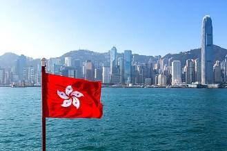
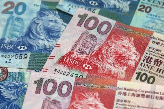
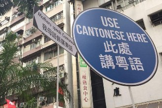
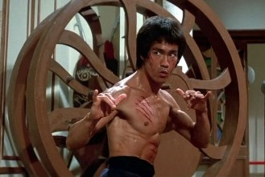

Hong Kong
Um pouco sobre Hong Kong
Geografia:Hong Kong é uma região administrativa especial da República Popular da China localizada na costa sul do país. Consiste em uma península e várias ilhas adjacentes, incluindo a Ilha de Hong Kong, a Ilha de Lantau, a Ilha de Lamma e outras ilhas menores. A área total de Hong Kong é de aproximadamente 1.106 km².
A cidade é famosa por sua paisagem urbana densa, com arranha-céus e ruas estreitas, mas possui também muitas áreas verdes, com destaque para o Parque Victoria.
A cidade tem uma população de mais de 7,5 milhões de pessoas e é uma das regiões mais densamente povoadas do mundo.
Hong Kong é um importante centro financeiro e de comércio internacional, com uma economia diversificada que inclui serviços financeiros, turismo, tecnologia, comércio e manufatura.
Outro destaque é a sua culinária, que inclui pratos como o dim sum, sopa de barbatana de tubarão e macarrão de ovo.
Algo a se admirar na cidade é sua defesa dos valores liberais e democráticos, o que as vezes leva à tensões contra o governo ditatorial chinês.
História:
Hong Kong tem uma história rica e interessante que se inicia há mais de 5.000 anos, quando tribos neolíticas viveram na região.
No Século III a.C., o território foi governado pela dinastia Qin da China.
No Século XIX, Hong Kong foi cedida ao Império Britânico como resultado da Primeira Guerra do Ópio, travada entre a China e a Grã-Bretanha. Pode parecer
estranho, mas Hong Kong só passou ao domínio inglês porque a Inglaterra travou uma guerra com a China para garantir que a Inglaterra comercializasse uma
droga na China, algo que o governo chinês não aceitava.
A cidade cresceu rapidamente durante a era colonial britânica e se tornou um importante centro comercial e financeiro na Ásia.
Em 1997, a soberania de Hong Kong foi devolvida à China como uma região administrativa especial, com um alto grau de autonomia em seus assuntos internos,
incluindo sua própria constituição, sistema judicial e sistema econômico. Esse acordo foi conhecido como a política "Um País, Dois Sistemas".
Desde então, Hong Kong passou por muitas mudanças políticas, sociais e econômicas.
Em 2019, a cidade foi palco de protestos em grande escala contra a legislação proposta que permitiria a extradição de suspeitos de crimes para a China
continental. Os protestos continuaram por vários meses e foram marcados por confrontos violentos entre manifestantes e as forças policiais.
Os cidadãos de Hong Kong olham com muita preocupação os avanços do governo chinês sobre Hong Kong.
Hoje, Hong Kong é uma cidade próspera e moderna, com uma economia diversificada e uma cultura única.
A cidade continua a ser um importante centro financeiro e comercial na Ásia e atrai muitos visitantes de todo o mundo com sua história, belas paisagens
e comida deliciosa.
População e demografia:
Hong Kong é uma das regiões mais densamente povoadas do mundo, com uma população de mais de 7,5 milhões de pessoas. A maioria da população é de ascendência
chinesa, com a maioria dos habitantes sendo cantoneses. No entanto, há também uma significativa comunidade de expatriados e pessoas de outras etnias,
incluindo indianos, filipinos, indonésios e britânicos.
A taxa de natalidade em Hong Kong é relativamente baixa em comparação com outros países, enquanto a expectativa de vida é alta, com os habitantes de Hong
Kong vivendo em média até os 85 anos.
A maioria da população vive na área urbana da Ilha de Hong Kong e na Península de Kowloon, com as áreas rurais e as ilhas menos povoadas. A cidade é
conhecida por sua densa paisagem urbana, com edifícios altos e estreitas ruas movimentadas.
Hong Kong é uma sociedade multicultural, com uma mistura de influências chinesas e ocidentais. A maioria dos habitantes de Hong Kong fala cantonês, mas o
inglês também é amplamente falado e é uma das línguas oficiais da cidade. A maioria da população segue o budismo, taoísmo ou confucionismo, mas há também
uma significativa população cristã e muçulmana.
Economia:
Hong Kong possui uma economia altamente desenvolvida e diversificada, com uma forte ênfase nos serviços financeiros e no comércio internacional. A cidade é
um importante centro financeiro global, com uma das bolsas de valores mais ativas do mundo, o Hong Kong Stock Exchange.
A economia de Hong Kong também é impulsionada pelo turismo, tecnologia, comércio e manufatura.
A cidade possui um dos portos mais movimentados do mundo, o que facilita o comércio internacional.
A política "Um País, Dois Sistemas" de Hong Kong oferece um ambiente de negócios estável e amigável, com baixas taxas de imposto e regulamentações
comerciais favoráveis.
A cidade se mantem há anos entre as economias mais livres e competitivas do mundo.
A infraestrutura de Hong Kong é moderna e bem desenvolvida, incluindo um sistema de transporte público eficiente e modernas instalações portuárias e
aeroportuárias.
Cultura:
A cultura de Hong Kong é uma mistura única de influências asiáticas e ocidentais, devido à história colonial da cidade e sua localização como um
importante centro comercial e financeiro na Ásia.
A cidade é conhecida por sua vibrante cena gastronômica, com uma variedade de cozinhas locais e internacionais. Destaque para seus pratos de dim sum,
frutos do mar frescos e comida de rua.
Hong Kong é um centro de artes e entretenimento, com uma grande cena de teatro, música, cinema e artes visuais. O cinema de ação de Hong Kong é praticamente
um subgênero específico, e tem fãs ao redor de todo o mundo.
Há muitos festivais tradicionais chineses, como o Festival da Primavera, o Festival do Meio do Outono e o Ano Novo Chinês. A cidade também hospeda festivais
internacionais de arte, música e cinema.
Vários eventos esportivos internacionais acontecem na cidade, como a Maratona de Hong Kong, o Grande Prêmio de Hong Kong de Fórmula E e o Torneio de Tênis
de Hong Kong.
Política:
A política de Hong Kong é regida pelo princípio "Um país, dois sistemas", acordado quando Hong Kong foi devolvida à China pela Grã-Bretanha em 1997. De
acordo com esse princípio, Hong Kong é uma Região Administrativa Especial da China (RAE), com um alto grau de autonomia em relação ao governo central em
Pequim.
O chefe do Executivo é o líder do governo de Hong Kong e é eleito por um comitê eleitoral. O Conselho Legislativo de Hong Kong é composto por 70 membros,
35 dos quais são eleitos por sufrágio universal e os outros 35 são eleitos por setores funcionais e corporativos.
No entanto, desde 2019, a política de Hong Kong tem sido marcada por protestos em grande escala e agitação civil em resposta a uma emenda proposta à lei de
extradição, que permitiria a extradição de suspeitos criminais de Hong Kong para a China continental. Os protestos evoluíram para um movimento mais amplo de
democracia e direitos humanos, com os manifestantes pedindo o sufrágio universal, a liberdade de expressão e a independência judicial.
Em 2020, a China impôs uma nova lei de segurança nacional em Hong Kong, o que gerou preocupações internacionais sobre o impacto na liberdade e autonomia de
Hong Kong. Desde então, houve uma maior repressão à dissidência política e muitos ativistas pró-democracia foram presos. A situação política em Hong Kong
continua a evoluir e é acompanhada de perto pela comunidade internacional.
Religião:
Hong Kong tem uma população muito diversa em termos de religião. As principais religiões incluem o budismo, taoísmo, cristianismo, islamismo e hinduísmo.
Além disso, muitos residentes de Hong Kong praticam uma combinação de crenças e tradições religiosas, e o respeito à liberdade religiosa é protegido pela
Lei Básica de Hong Kong.
O budismo e o taoísmo são as religiões mais praticadas em Hong Kong, e muitos templos e santuários budistas e taoístas podem ser encontrados em toda a
cidade.
O cristianismo também tem uma presença significativa em Hong Kong, com muitas igrejas cristãs de diferentes denominações espalhadas pela cidade.
O islã e o hinduísmo são praticados principalmente por minorias étnicas em Hong Kong, como os indianos e paquistaneses.
Além disso, muitos residentes de Hong Kong também praticam o feng shui, tradição chinesa que se concentra em harmonizar o ambiente natural e o ambiente
construído para melhorar a sorte e a prosperidade. O feng shui é incorporado em muitos aspectos da vida cotidiana em Hong Kong, incluindo a arquitetura e
o design de edifícios.
Desenvolvimento Humano:
O Índice de Desenvolvimento Humano (IDH) de Hong Kong é muito alto e em 2021 estava classificado como o 4º mais alto do mundo, de acordo com o Relatório
de Desenvolvimento Humano das Nações Unidas.
O IDH de Hong Kong é impulsionado principalmente pelo alto nível de educação, saúde e renda da população.
A renda per capita de Hong Kong é uma das mais altas do mundo, classificada em 11º lugar pelo Fundo Monetário Internacional (FMI) em 2021.
A economia de Hong Kong é altamente desenvolvida e diversificada, com um foco em serviços financeiros, turismo e comércio.
A cidade também é um importante centro de transporte e logística, com um dos portos mais movimentados do mundo.
No entanto, apesar da alta renda per capita, Hong Kong tem uma das maiores desigualdades de renda do mundo.
O governo de Hong Kong implementou vários programas sociais para tentar abordar essa desigualdade, incluindo o fornecimento de moradia pública e serviços
de assistência social.
A Terra do Kung Fu
Porque ir à Hong Kong? O que te espera por lá?
O que me fez me interessar em ir para Hong Kong foi o fato de eu sempre ter gostado de grandes ambientes urbanos (mais do que litoral ou interior).Sempre olhei maravilhado para imagens de Victoria Harbour e seus modernos arranha-céus.
Outra coisa que eu sempre achei muito impactante em Hong Kong é como eles mantém viva a tradição dos letreiros comerciais feitos em neon.
Adicione à isso o fato da pacífica convivência da milenar tradição chinesa com toda a modernidade que se vê na arquitetura de Hong Kong e você tem uma combinação que vale a pena ser vista de perto.
Hong Kong é uma cidade icônica também para muitos cinéfilos, especialmente entusiastas de filmes de luta e policiais. O cinema de Hong Kong é um dos que mais têm fãs ao redor do mundo, graças ao seu estilo único de filmes de Kung Fu e filmes policiais. Atores como Jackie Chan e Jet Li ganharam bastante fama no cinema internacional graças à seus filmes produzidos em Hong Kong.
Hong Kong é uma cidade moderna, bastante urbanizada e com áreas bastante distintas, como ilhas de pescadores, reservas naturais, grandes parques, arranha-céus, grandes avenidas, muito movimento e tudo o que se espera de bom em uma metrópole, mas aqui, felizmente algumas das coisas ruins que se esperam de uma metrópole não estão presentes.
Em resumo, vale muito a pena conhecer tanto a modernidade quanto o lado mais tradicional da terra de Bruce Lee, só não deixe de prestar atenção aos pequenos detalhes, como as vielas, o reflexo dos neons e o caldeirão cultural da cidade.
O que é necessário para um brasileiro entrar em Hong Kong?
Brasileiros não precisam de visto para turismo, e podem permanecer na cidade por até 90 dias com o carimbo de entrada turística. Mas atenção ao seu passaporte, pois ele deve ter uma validade de pelo menos 6 meses após a data de entrada. Pode ser solicitada a apresentação de uma passagem de volta ou de continuação da viagem para outro destino, reserva de acomodação, seguro de saúde internacional e comprovação de fundos suficientes para se manter durante sua estadia, mas nem sempre isso tudo é pedido.Outra exigência que é muito importante verificar é a apresentação do certificado internacional de vacinação contra febre amarela.
Como chegar à Hong Kong?
Hong Kong é uma cidade muito bem conectada com as principais cidades da Ásia e da Europa.Por motivos de distância, não há voos diretos saindo do Brasil em direção à Hong Kong, mas há várias opções com escalas na Europa.
* De avião: o Aeroporto Internacional de Hong Kong, também conhecido como Aeroporto Chek Lap Kok, é uma das principais portas de entrada para Hong Kong. É servido por muitas companhias aéreas internacionais e oferece voos diretos para várias cidades ao redor do mundo. No próprio aeroporto há uma estação de metrô (linha petróleo), que se conecta com a linha Tung Chung (laranja), na estação Tsing Yi.
* De trem: partindo da China continental, se você estiver em uma região próxima à Hong Kong, como Guangzhou ou Shenzhen, pode optar por viajar de trem convencional. O trem-bala conecta Hong Kong à várias cidades chinesas, como Pequim, Xangai e Guangzhou.
* De balsa: se estiver em Macau ou em alguma ilha vizinha, como Zhuhai ou Shenzhen, você pode pegar uma balsa para chegar à Hong Kong. Há serviços de balsa frequentes e rápidos disponíveis entre as 2 cidades.
* De ônibus: se estiver nas próximo à cidades na China continental como Guangzhou ou Shenzhen, é possível chegar a Hong Kong de ônibus. Há serviços regulares de ônibus que conectam essas cidades à Hong Kong.
Desligue o "piloto automático"
Ainda que esta recomendação seja apropriada para qualquer viagem, para cidades multiculturais e tão diferentes como Hong Kong, ela ainda mais recomendável.Muitos de nós já ligamos o piloto automático: temos uma atração para ver após outra e saímos correndo em direção à próxima, alheios ao que está no caminho, sem registrarmos o que passou no percurso, pois nossa atenção está focada no próximo ponto, que na nossa ideia deve ser alcançado no menor espaço de tempo e pelo caminho mais curto. Tudo o que fica pelo caminho é irrelevante e desconsiderado, ás vezes tão insignificante que nos tornamos completamente alheios, pois nosso alvo é o que importa. É como ter a visão embaçada ao que está à nossa volta, focalizando apenas o alvo.
Ao chegarmos nele, não registramos nada do que ficou pelo caminho, simplesmente saímos do ponto A ao B no piloto automático. O que ficou entre os 2 pontos foi um espaço vazio.
Se você fizer isso em Hong Kong, perderá MUITA coisa interessante.
Pode parecer estranho, mas por analogia viagens devem ser como a vida: devemos ter um alvo, mas não nos concentrarmos apenas nele. Nossas vidas, assim como nossas viagens, por mais planejadas que sejam (eu sou um ferrenho defensor de programar intensamente as viagens), por melhor que enxerguemos o alvo, passam por uma sucessão natural de fatos e acontecimentos durante o trajeto (da vida ou viagem), repleto de atrações paralelas, ocorrências secundárias, acontecimentos imprevisíveis e supervenientes à nossa vontade, fatos independentes e sem nenhuma relação entre si, eventos ocasionais não programados, atalhos, recuos e retornos, etc.
É bom pensar assim em uma viagem: ter um alvo, sempre, mas enxergar além dele, e também ao seu redor com o mesmo grau de atenção. Em Hong Kong isso enriquecerá grandemente sua experiência!
O clima
O clima de Hong Kong é subtropical úmido, com verões quentes e úmidos e invernos relativamente amenos.A cidade possui 4 estações distintas.
Durante o verão, de junho a agosto, as temperaturas médias diárias podem chegar a 31°C, com umidade alta e chuvas frequentes, às vezes em forma de tufões e tempestades tropicais. Os invernos, de dezembro a fevereiro, são relativamente amenos, com temperaturas médias diárias em torno de 17°C. O inverno também é a estação seca em Hong Kong, com poucas chuvas e céus geralmente ensolarados.
A primavera, de março a maio, e o outono, de setembro a novembro, são estações agradáveis em Hong Kong, com temperaturas médias diárias em torno de 23-24°C e baixa umidade. Essas estações são populares entre os turistas por causa do clima ameno e do ar mais seco.
Devido à sua localização no sul da China, Hong Kong é suscetível a tufões durante a temporada de tufões, que geralmente ocorre de maio a novembro. No entanto, o governo de Hong Kong tem um sistema eficaz de alerta de tufões e preparação para emergências, para minimizar os riscos à segurança pública.
A moeda
A moeda oficial de Hong Kong é o dólar de Hong Kong (HKD), emitida pelo Conselho Monetário de Hong Kong.O dólar de Hong Kong é vinculado ao dólar americano por meio de um sistema de câmbio flutuante controlado, o que significa que o valor da moeda de Hong Kong flutua em relação ao dólar americano, mas dentro de uma faixa estabelecida.
As notas de dólar de Hong Kong estão disponíveis em valores de 10, 20, 50, 100, 500 e 1.000, enquanto as moedas estão disponíveis em 10 centavos, 20 centavos, 50 centavos, 1, 2, 5 e 10 dólares de Hong Kong.
As notas e moedas de dólar de Hong Kong apresentam imagens de figuras históricas, edifícios e paisagens da cidade.

Feriados
Alguns feriados são definidos pelo calendário lunar, portanto o dia varia conforme o ano.01/01: Ano Novo
Fevereiro: Ano Novo Chinês
Abril: Festival Ching Ming
01/05: Dia Internacional do Trabalho
Junho: Festival dos Barcos
01/07: Dia da Fundação de Hong Kong
Setembro: Festival da Lua
1/10: Dia Nacional de HK
Outubro: Festival Chung Yeung
25-26/12: Natal
Tomadas e eletricidade
A corrente elétrica em Hong Kong é de 220V, e as tomadas são de 2 tipos: as de 3 pinos redondos e as de 3 pinos achatados. A grande maioria é de tomadas com entradas para pinhos chatos, já que não se vendem mais aparelhos com pinos redondos em Hong Kong e as tomadas com este padrão vem sendo substituídas.


Falando cantonês
O idioma oficial de Hong Kong é o cantonês, embora o inglês também seja amplamente falado e reconhecido como um idioma oficial. O cantonês é uma língua tonal e usa caracteres chineses em sua escrita.O inglês é ensinado em escolas e é usado em muitos setores, como negócios, finanças e turismo.
O alfabeto oficial de Hong Kong é o chinês, composto por milhares de caracteres, cada um representando uma palavra ou ideia diferente. Além disso, Hong Kong usa o Pinyin (sistema de romanização do mandarim) para ajudar a ensinar o chinês padrão e facilitar a comunicação com os falantes de mandarim na China continental.
O inglês é escrito em um alfabeto latino comum, e sinais e documentos tendem a usar a ortografia britânica em vez da americana. O bilinguismo é uma parte importante da cultura de Hong Kong, e muitos sinais e documentos oficiais são escritos em ambos os idiomas, chinês e inglês.

Hong Kong é segura?
Hong Kong é considerada uma cidade segura para turistas e residentes. A cidade tem taxas muito baixas de criminalidade violenta e é conhecida por ser uma das cidades mais seguras do mundo.Me recordo que na virada de ano de 2013 para 2014 eu estava sentado em frente ao Victoria Harbour esperando a contagem regressiva e queima de fogos, e do meu lado estava um senhor de idade, inglês. Ele me contou que morava há anos em Hong Kong e o que ele mais gostava na cidade é que ela é extremamente segura, e que, segundo ele, há uma diferença enorme nesse quesito entre Hong Kong e Londres, a cidade na qual ele morava.
No entanto, é importante estar ciente de que protestos e manifestações podem ocorrer em Hong Kong, especialmente em áreas centrais da cidade. Esses eventos podem resultar em congestionamentos de tráfego, fechamento de lojas e interrupções no transporte público. É recomendável verificar as condições atuais em Hong Kong e evitar áreas com grandes concentrações de manifestantes.
Além disso, assim como em qualquer grande cidade, os turistas devem estar atentos ao seus pertences pessoais e evitar expor objetos de valor em locais públicos.
Como em qualquer lugar, é recomendável guardar seus objetos de valor em um cofre no hotel e estar sempre vigilante enquanto se move pela cidade.
Seguir essas precauções básicas de segurança irá ajudar a garantir que sua viagem a Hong Kong seja agradável e segura.
Tourist traps e scams
Como em qualquer destino turístico popular, Hong Kong também tem suas armadilhas para turistas e golpes comuns. Em Hong Kong não há nada de muito grave nesses golpes, e geralmente eles estão mais relacionados à preços inflacionados. Mas é importante estar ciente dessas situações para evitar gastos desnecessários e aproveitar sua visita. Alguns exemplos de "tourist traps" e golpes em Hong Kong são:* Lojas de joias: cuidado com as lojas de joias que oferecem preços muito baixos ou descontos muito generosos. Alguns vendedores podem tentar enganar os turistas vendendo joias falsas ou de qualidade inferior. Recomenda-se fazer compras em lojas confiáveis e conhecidas, como em shoppings ou que sejam parte de alguma rede de lojas confiável.
* Lojas de souvenirs: algumas lojas de souvenirs em áreas turísticas podem inflacionar bastante os preços. Não saia comprando na primeira loja que ver, compare preços e se possível, negocie.
* Restaurantes turísticos: alguns restaurantes em áreas turísticas podem ter preços bem mais altos e oferecer comida de qualidade inferior. Procure recomendações de restaurantes locais autênticos e fuja dos lugares com cardápios e placas escritas apenas em inglês! Hoje em dia, com o Google você pesquisa as avaliações de qualquer comércio.
* Golpes de taxistas: alguns taxistas podem tentar cobrar tarifas abusivas ou dar voltas desnecessárias para aumentar a conta. Certifique-se de que o taxímetro esteja ligado e evite táxis não licenciados. Se possível, tenha uma ideia geral da rota antes de iniciar a viagem. Deixe o taxista ver que você está acompanhando a rota no Google Maps e isso já inibe boa parte dos possíveis golpistas.
* Golpes de agências de turismo: algumas agências de turismo podem oferecer pacotes turísticos com preços baixos, mas não entregar tudo o que foi prometido. Verifique a reputação da agência antes de fazer reservas e leia atentamente as letras miúdas do contrato.
* Batedores de carteira: como em qualquer cidade movimentada, é importante tomar precauções contra batedores de carteira. Mantenha seus pertences pessoais próximos a você, especialmente em áreas lotadas e transporte público. Não é comum, mas se você facilitar demais, alguém pode aproveitar a oportunidade.
* Golpes de casas de chá: alguns golpistas abordam turistas na rua e os convidam para uma casa de chá para uma experiência cultural. Ao final da visita, eles podem cobrar preços exorbitantes ou exigir pagamentos adicionais. O melhor é não aceitar convites de estranhos.
A Cozinha de Hong Kong
A culinária de Hong Kong é uma mistura de influências chinesas e internacionais, com pratos deliciosos e variados.Se quiser uma experiência autêntica em Hong Kong, não vá aos restaurantes caros. Ao invés disso vá até uma das muitas barraquinhas de comida de rua, conhecidas como dai pai dong. O atendimento é casual, a decoração é mínima ou inexistente, mas a comida é boa e barata!
Os dai pai dongs surgiram após a 2ª Guerra Mundial, e eram marcadas com uma dai pai (licença grande); por isso são chamados de dai pai dong (lojinha da licença grande).
Como o grande número de imigrantes vindos da China continental, os dai pai dongs se tornaram parte da cultura da cidade, locais onde os vizinhos se encontravam para uma refeição casual com arroz ou macarrão, onde encontram os amigos e batem papo.
Uma área, em Sheung Wan, tem tantos dai pai dongs populares que ficou conhecida como "Clube Noturno do Homem Pobre".
Alguns dos principais pratos da culinária de Hong Kong incluem:
* Dim sum: pequenas porções de alimentos servidas em cestas de bambu, que incluem bolinhos de massa, dumplings, rolinhos primavera, entre outros.
* Char siu: carne de porco assada em um espeto, geralmente marinada com molho agridoce.
* Frutos do mar: Hong Kong é famosa pelos seus pratos de frutos do mar, que incluem lagosta, caranguejo, camarão, polvo e mexilhões, entre outros.
* Noodles de Hong Kong: macarrão fino e liso servido com caldo, carne, legumes e temperos.
* Arroz com frango: prato popular que consiste em arroz cozido no vapor com frango e molho de soja.
* Wonton noodles: macarrão servido com wontons, pequenos bolinhos de massa recheados com carne ou frutos do mar.
* Hot pot: prato de fondue de panela quente, em que os ingredientes, como carnes, frutos do mar e legumes, são cozidos na mesa.
* Egg tarts: sobremesa popular feita de uma crosta de massa com recheio de ovo doce.
* Bubble tea: bebida doce e refrescante que consiste em chá com leite e bolhas de tapioca.
Esses são apenas alguns exemplos de pratos deliciosos da culinária de Hong Kong. A cidade também é conhecida por sua ampla variedade de restaurantes, que vão de barracas de rua à estabelecimentos elegantes de alta gastronomia.
Hong Kong na cultura Pop
Hong Kong é frequentemente mencionada na cultura pop em todo o mundo, seja no cinema, na música, na gastronomia, nos games, etc. Alguns exemplos são:Filmes:
Hong Kong é famosa por suas produções de cinema e muitos filmes de Hong Kong se tornaram populares em todo o mundo. Alguns dos mais famosos incluem O Tigre e o Dragão (2000), Desejo e Perigo (2007) e Infernal Affairs (2002), que inspirou o filme americano Os Infiltrados (2006).
Entre meus filmes preferidos de Hong Kong, eu citaria:
* Fervura Máxima (hard-boiled / lat sau san taam, 1992): durante investigações sobre o contrabando de armas para Hong Kong, um policial é morto durante uma batida em uma casa de chá. Um detetive, parceiro do policial morto decide investigar os 2 principais contrabandistas de armas da cidade, que estão em guerra por território pelo mercado de armas local. Agindo com ajuda de um informante, o detetive fica mais próximo do círculo de líderes e eventualmente acaba tendo que trabalhar diretamente com este informante. Ótimo filme de ação incessante. Você nunca vai ver tanto tiro em um só filme como neste, isto eu garanto. Um clássico! 👍👍👍👍
* Assombração (re-cycle / gwai wik, 2006): após escrever 3 best-sellers sobre histórias de amor baseadas em suas experiências pessoais, a escritora Tsui Ting-Yin está sem inspiração e com dificuldade em escrever seu novo livro de terror chamado Re-cycle. Enquanto fazia o esboço do texto, eventos estranhos acontecem no seu apartamento. Quando Tsui vê um personagem sobrenatural de seu livro, ela o segue e fica presa no seu mundo de terror. Lá ela conhece o jovem Ting-yu, que revela um segredo sobre o ser sobrenatural à Tsui. 👍👍👍👍
* Beyond Our Ken (gung ju fuk sau gei, 2004): Shirley é garçonete em um karaokê e certo dia é confrontada por Ching, ex-namorada de Ken, atual namorado de Shirley. Ching avisa à Shirley que ele tem um passado sombrio. Após contar sua história, Ching explica que perdeu seu emprego e sua honra por causa de Ken. Shirley inicialmente duvida, mas depois acaba acreditando e decide ajudar Ching à entrar no apartamento de Ken para apagar fotos que ele ainda tem dela. Com medo de acabar igual a Ching, Shirley se junta à ela contra Ken. 👍👍👍
* Tempestade de Fogo (firestorm / feng bao, 2013): uma tempestade devastadora se aproxima de Hong Kong. Enquanto a cidade aguarda pela tempestade, outra força destrutiva a ataca: criminosos liderados pelo famoso Nam, que não demonstram piedade por ninguém que fique pelo caminho. As ações do grupo humilham a polícia, e o inspetor Lui está decidido à por um fim ao império do crime de Nam e sua gangue. Logo ele percebe que as táticas padrão da polícia são inúteis para mandar esses criminosos para a cadeia. O crime extremo requer justiça extrema, mesmo que isso signifique cruzar a linha da legalidade e da moralidade. Tou, um ex-condenado desesperado para deixar seu passado criminoso para trás se voluntaria para ser infiltrado de Lui em troca de um novo começo. Mas ele mal poderia imaginar na situação infernal em que estava se metendo. 👍👍👍
* Kung Fusão (kung fu hustle, 2004): em Xangai, nos anos 1940, Sing, um aspirante a gangster sonha em se juntar à famosa Gangue do Machado. Ele acaba parando em uma conjunto habitacional controlado por proprietários no mínimo estranhos, que possuem uma rara habilidade em kung fu. As ações de Sing acabam levando à um confronto entre a Gangue do Machado e os morados do conjunto. 👍👍👍
* Frente à Frente (raging fire / nou fo, 2021): o policial Cheung é um oficial da Unidade Regional de Crime que trabalhou na linha de frente contra o crime por muitos anos. Quando uma gangue de assaltantes de banco mata um policial, fica à cargo dele a missão de capturá-los. Acontece que o líder dessa gangue é Yao, seu ex-parceiro na polícia, que acabou se voltando ao mundo do crime. Agora, os 2, antes parceiros na polícia, são inimigos. 👍👍👍
* Police Story - A Guerra das Drogas (police story / ging chaat goo si, 1985): Kevin Chan é um policial de Hong Kong que faz seu primeiro grande trabalho ao prender praticamente sozinho um grande chefe do tráfico de drogas. É claro que o traficante não gosta nem um pouco disso e incrimina injustamente Kevin pelo assassinato de outro policial. Agora Kevin está decidido à limpar seu nome enquanto foge tanto dos traficantes quanto da polícia. 👍👍👍
* A 36ª Câmara de Shaolin (the 36th chamber of shaolin / shao lin san shi liu fang, 1978): os patriotas anti-Ching, sob comando de Ho Kuang-han, secretamente montam sua base no Cantão, disfarçados de professores. Durante um brutal ataque dos Manchus, Lui consegue escapar e se dedica à aprender artes marciais para buscar vingança. Em um curto período de tempo ele precisa dominar as artes marciais, além do uso de espadas, varas e lanças. Se conseguir passar por 36 desafios ele poderá ser um mestre shaolin e estará preparado para sua vingança. O legal do filme é o foco na evolução do personagem, meio no estilo Rocky. O filme é bem inspirador no sentido de mostrar o esforço na evolução através de pequenas etapas até que ele esteja preparado para a batalha final. 👍👍👍
* Prisioneiro do Inferno (prison on fire / gam yuk fung wan, 1987): drama de ação que mostra a história e os laços de amizade entre 2 detentos de um presídio de Hong Kong. Juntos eles terão que sobreviver as dificuldades da prisão enquanto aguardam o fim de suas penas. 👍👍👍
* A Fúria do Dragão (fist of fury / jing wu men, 1972): voltando à Xangai para se casar com sua noiva, Chen Zhen, um aluno do renomado mestre de artes marciais Huo Yuanjia, descobre que seu mestre morreu. Durante o funeral, membros de uma escola japonesa de judô aparecem e insultam os alunos chineses. A provocação continua, com Chen revidando. É aí que ele descobre a verdade: seu mestre foi envenenado por ordem do mestre do dojo japonês. A partir de então ele inicia uma missão de vingança. Meu filme preferido do Bruce Lee. 👍👍👍
* Operação Dragão (enter the dragon, 1973): Lee é recrutado por uma agência para investigar um campeonato de artes marciais organizado por Han, já que acreditam que há tráfico de ópio no torneio. Roper e Williams são antigos amigos do exército desde a Guerra do Vietnã e entram no torneio por diferentes problemas que eles enfrentam. O filme acompanha a trajetória dos 3 no torneio mortal. Produção conjunta entre Hong Kong e EUA, este é sem dúvida um dos maiores clássicos da história dos filmes de luta. 👍👍👍

Música:
A música pop de Hong Kong é conhecida como Cantopop e tem uma grande base de fãs em todo o mundo. Cantores como Leslie Cheung, Anita Mui e Andy Lau se
tornaram ícones culturais.
Entre as bandas que eu indicaria, estão:
Punk e Hardcore:
King Ly Chee: banda hardcore formada em 1999. O vocalista da banda, Riz, tem um excelente portal dedicado à divulgação do
hardcore/punk/metal/oi asiático, o Unite Asia (https://uniteasia.org/). Faça um favor à si mesmo e
veja o vídeo de Lost in a World no Youtube ou ouça Queen's Pier!
Rain in Time (及時雨): banda indie-punk com vocal feminino em cantonês, formada em 2008 em Hong Kong. Ouça 一岸之遙 e me agradeça depois :)
Yau Dong (遊蕩): hardcore com uma pegada metal, em inglês. Ouça Fight for Honor (tem vídeo no Youtube).
Fight Club: hardcore metal moderno. Assista ao vídeo de Train, primeiro vídeo oficial da banda, que conta com cenas de acidentes com o trem
Thomas (WTF?).
Dagger: banda metalcore que é praticamente um all star team do hardcore de Hong Kong, com membros do King Ly Chee, Yau Dong e Fight Club.

Post hardcore / indie:
Hybrid Stereo: indie rock em inglês e com vocal feminino. Embora a banda seja de Hong Kong, ela é formado por imigrantes das
Filipinas. Ouça Museum of Memories e me agradeça depois ;)
KASA: cantor de indie rock, em inglês e japonês. Ele é japonês, mas desde criança vive em Hong Kong. Ouça a música Clocks ;)
Instinct of Sight: post hardcore / emo metal em cantonês, formada em Hong Kong em 2014.
Restate de Moira: rock alternativo / power pop com vocal feminino em inglês, de Hong Kong. Ouça Poison (a versão em inglês é boa, mas a versão
em japonês é ainda melhor!).
Cosmos (萬象): post hardcore / indie em mandarim.
Metal:
CharmCharmChu (慘慘豬): banda thrash metal em cantonês, formada em 2009. As letras abordam de poesias Tang à questões políticas e memes de
internet.
As atrações de Hong Kong


Não há muito o que falar, apenas admirar a beleza do lugar, especialmente durante a noite.
Como chegar: como é uma área bem abrangente, você pode querer ir à diferentes pontos do Victoria Harbour. O melhor local para fotografar os prédios e assistir a Sinfonia das Luzes fica no bairro de Tsim Sha Tsui. Você pode descer na estação East Tsim Sha Tsui, saída J, seguir 200m pela rua Salisbury até a esquina com a rua Nathan. Vire à esquerda e siga 150m pela rua Nathan até o Victoria Harbour. Você pode descer também na estação Tsim Sha Tsui, sair pela saída L3, seguir 20m até a rua Nathan, virar à direita e seguir 200m até o Victoria Harbour. Se preferir ir para o outro lado da enseada, as estações Sheung Wan, Hong Kong, Exhibition Centre, Causeway Bay, Fortress Hill e North Point ficam bem próximas à margem sul da enseada. Destas, a melhor opção é a Exhibition Centre, pois fica no meio das opções e é a mais próxima à margem sul da enseada.
As narrações são em inglês nas Segundas, Quartas e Sextas, em mandarim nas Terças, Quintas e Sábados e em cantonês aos Domingos.
O show é dividido em 5 temas principais:
A 1ª cena, Awakening (Despertar), começa com flashes de lasers que dão vida à núcleos de energia luminosa que gradualmente iluminam os prédios usando um arranjo de luzes dançantes e cores do arco íris. Esta cena simboliza a a origem e o poderoso crescimento da cidade.
A 2ª cena, Energy (Energia), é representada com a exibição de um modelo de cores crescentes e com a movimento dos lasers e luzes pelo céu, representando a energia vibrante de Hong Kong.
Na 3ª cena, Heritage (Herança), as tradicionais cores da sorte, vermelho e amarelo, são exibidas através dos prédios em ambos os lados da enseada, complementada com a introdução de uma música feita com instrumentos chineses, simbolizando a herança colorida e as ricas tradições culturais da cidade.
A 4ª cena, Partnership (Parceria) exibe uma demonstração de feixes de laser e luzes se movendo ao longo da enseada, representando uma ligação iluminada com o outro lado. Os feixes se encontram para simbolicamente ligar os 2 lados da enseada em uma parceria ainda maior.
O encerramento, Celebration (Celebração), traz uma poderosa exibição rítmica de luzes rodopiantes, padrões de luz caleidoscópicas e feixes dançando ao redor da enseada. Esta excitante cena final significa a celebração da parceria entre os 2 lados da enseada.
Horário: diariamente, a partir das 20:00.
Alguns relatórios dizem que foi uns 10 anos depois, com a venda das ações para outro empresário, que a empresa das balsas passou a se chamar Star Ferry Company.
Suas principais rotas transportam passageiros através do Victoria Harbour, entre a ilha de Hong Kong e Kowloon.
A frota de balsas opera 4 rotas pelo porto, transportando mais de 70.000 passageiros por dia, ou 26 milhões por ano. Embora atualmente hajam outros meios de se cruzar a enseada (com o metrô e túneis viários), o Star Ferry continua sendo um meio eficiente, popular e barato de fazer a travessia.
A linha principal segue entre os píeres Central e Tsim Sha Tsui, que são os quais os locais se referem como Star Ferry. Esta rota é também bastante popular entre os turistas. O trajeto, que leva menos de 10 minutos, é incrivelmente atmosférico, e barato. A parte de cima da balsa é um pouco mais cara, mas permite vistas melhores. Desde a balsa é possível ter uma excelente vista de Victoria Harbour e dos prédios ao redor.
Há uma rota turística que dá uma volta circular no Victoria Harbour em um percurso de cerca de 1h.
Horário: das 6:30 às 23:30.
Preço: entre HK$ 2,5 e HK$ 5,5, dependendo da rota e da parte da balsa (você vai precisar do cartão Octopus). Preços de 07/2023.
Site: www.starferry.com.hk Voltar à lista
Ao longo do caminho os visitantes encontram estátuas e esculturas que fazem referência ao cinema local e retratam algumas das figuras mais icônicas do cinema de Hong Kong.
Entre as estátuas mais conhecidas, estão a de Bruce Lee a de Anita Mui, uma renomada cantora e atriz que conquistou grande popularidade em sua carreira.
Além das estátuas, há também placas de concreto com as mãos e assinaturas de outras estrelas do cinema.
É claro que está é uma cópia descarada da calçada da fama de Hollywood, e a menos que você seja chinês, a maioria dos nomes aqui será de estanhos para você, com exceções como Bruce Lee, Jet Li, Jackie Chan e Michelle Yeoh. Outros nomes relativamente conhecidos no ocidente são Andy Lau, Tony Leung, Stephen Chow (do filme Kung Fu Hustle), Sammo Hung e Yuen Wo Ping.
A localização privilegiada da atração oferece uma vista deslumbrante dos prédios de Hong Kong e do horizonte icônico do Victoria Harbour.
É um dos melhores pontos de observação do show de lasers Sinfonia das Luzes, que acontece todas as noites no Victoria Harbour.
IMPORTANTE! Desde setembro de 2021, a atração está temporariamente fechada para renovações e melhorias. O projeto de renovação visa aprimorar ainda mais o local e criar uma experiência ainda mais envolvente aos visitantes. Durante esse período, algumas das estátuas foram transferidas para áreas próximas, para que os turistas e moradores ainda possam apreciar essas obras. As principais estátuas estão em um parque próximo ao início da Avenida das Estrelas, do outro lado da rua Salisbury.
Como chegar: desça na estação Tsim Sha Tsui ou East Tsim Sha Tsui, saia pela saída P3 na rua Chatham, vire à direita e desça 200m por essa rua até chegar à uma passarela sobre um trevo com a rua Salisbury. Atravesse a rua Salisbury e siga mais uns 60m reto pela rua Chatham, que termina em uma galeria. Siga mais uns 80m adiante por essa galeria e você vai sair na Avenida das Estrelas. Site: www.avenueofstars.com.hk Voltar à lista
Foi a primeira rua a ser construída em Kowloon, em 1861, após a terra ser repassada aos britânicos depois da segunda Guerra do Ópio.
A rua, que tem cerca de 4km de extensão, inicialmente chamava-se Robinson Road, mas teve seu nome mudado para Nathan Road em 1909, em homenagem ao Sir Matthew Nathan, o 13º governante de Hong Kong.
A rua segue dos Hotéis Peninsula e Sheraton na Salisbury Road passando pelas infames Mansões Chungking e Mirador, pelo Kowloon Park (esta primeira parte é conhecida como Golden Mile), antes de se dirigir à Yau Ma Tei e Mong Kok, onde encontram-se os chamativos neons, que são uma atração imperdível de Hong Kong, pelo menos pra mim, haha. Sempre tive essa imagem dos letreiros de Hong Kong na minha mente. E de fato, ver eles de perto é algo bem marcante.
Nesta rua você encontra gente, muita gente, muitos turistas, um vendedor aliciador indiano a cada 5m, grandes shoppings lado a lado, restaurantes, casas de massagem tradicionais e outras mais "alternativas", alguns golpistas, maloqueiros, lojas de joias, souvenirs, eletrônicos, roupas, etc.
A melhor hora para visitar a área é durante a noite, quando os neons dão o aspecto mais característico da rua, mas fique atento aos seus pertences. Não facilite para os batedores de carteira!
Horário: a maioria das lojas abre das 9:00 até a meia noite.
Tem espaço para 2000 pessoas, e ocupa o local de uma antiga mesquita construída em 1896, que havia sido construída para tropas muçulmanas indianas.
Muçulmanos podem entrar livremente, mas não muçulmanos devem pedir permissão antes de entrar.
Não se esqueça de remover seus calçados!
Como chegar: desça na estação Tsim Sha Tsui, saia pela saída A1 ou B1, ambas ficam muito próximas à mesquita (a A1 fica há uns 25m ao sul e a B1 há uns 40m, de frente à mesquita, atravessando a rua Nathan).
Horário: diariamente das 5:00 às 22:00 Voltar à lista
Foi projetado no estilo da Dinastia Tang, uma clássica área de jardim circular inspirada na planta do jardim Jiangshouju na província de Shanxi.
Cobre uma área de 35.000m², com árvores, rochas, lagos, cachoeiras e fontes.
Ao longo do caminho você encontra estruturas no estilo arquitetônico Tang, como pavilhões, terraços, varandas, salões, pontes e portões.
Como chegar: desça na estação Diamond Hill, saia do shopping Plaza Hollywood e siga uns 150m pela rua Sheung Yuen até a parte de trás do shopping (onde há 4 torres de apartamentos). Você vai chegar, debaixo do viaduto, à esquina com a rua Fung Tak. Vire à direita e siga uns 150m abaixo, passando por baixo de 2 viadutos. A entrada fica em uma passarela que liga o jardim ao Convento Chi Lin.
Entrada: gratuita.
Horário: das 7:00 às 21:00. Voltar à lista
Há 2 hotéis ao lado do parque, o Hong Kong Disneyland Hotel (5 estrelas) e o Disney's Hollywood Hotel (4 estrelas), com um total de 1.000 quartos.
Durante a semana não há a tradicional queima de fogos, mas em compensação, o movimento é bem menor e você não precisa esperar tanto tempo nas filas para os brinquedos, além de ser mais barato.
A lista das atrações pode ser consultada em https://www.hongkongdisneyland.com/attractions/.
Como chegar: desça na estação Disneyland Resort, ela fica praticamente de frente aos portões do parque.
Horário: das 10:00 às 20:00 (até às 22:00 nos finais de semana, feriados e época de Natal).
Entrada: HK$ 639 (1 dia) ou HK$ 904 (2 dias) para maiores de 12 anos. HK$ 475 (1 dia) ou HK$ 679 (2 dias) para crianças de 3 à 11 anos. HK$ 100 (1 dia) ou HK$ 170 (2 dias) para maiores de 65 anos. Nos dias de pico (feriados e final de semana, há um acréscimo de 10% no valor da entrada). Preços de 07/2023. Voltar à lista
Com 554m de altura, o Pico, como é chamado agora, é o ponto mais alto em Hong Kong e ocupa a parte oeste da ilha.
Se puder escolher o dia pra ir, deixe pra ir em um dia com clima bom, pois quando está chuvoso ou nublado, não dá pra ver muita coisa de cima do morro.
Para subir, você pode pegar o Peak Tram que te leva ao topo em cerca de 8 minutos.
O bonde está em operação desde 1888.
No alto do morro, você encontra a Peak Tower, uma construção de 7 andares, que abriga várias atrações, como o Museu de Cera Madame Tussauds, o Ripley's Believe It or Not! Odditorium, o Peak Explorer Motion Simulator, o observatório e um shopping center com restaurantes e lojas de souvenirs. O Museu de Cera Madame Tussauds possui celebridades separadas por categorias, como atores asiáticos (como Bruce Lee, Jackie Chan, Andy Lau, Aaron Kwok), estrelas de Hollywood (como Brad Pitt e Angelina Jolie), realezas (como a Rainha Elizabeth), líderes mundiais (como Nelson Mandela), ídolos do esporte e outras personalidades (como Albert Einstein), etc.
É necessário o pagamento de uma taxa para acessar o observatório, mas isso não é recomendado pois a área externa ao redor do Pavilhão do Leão oferece as mesmas vistas, de graça!
Horário: o bonde opera das 7:00 às 00:00. O museu de cera abre das 10:00 às 22:00.
Preço: o bonde custa HK$ 37 (adultos) ou HK$ 14 (crianças de 3 à 11 anos e idosos acima de 65), para 1 percurso. Ida e volta custa HK$ 52 (adultos ) e HK$ 23 (crianças e idosos). O preço combinado com o ingresso do observatório é de HK$ 84 e HK$ 38 para adultos, e crianças ou idosos, respectivamente, com 1 percurso do bonde. O observatório mais ida e volta custa HK$ 99 (adultos) ou HK$ 47 (crianças e idosos). O Museu de Cera custa HK$ 230 comprando pelo site: www.madametussauds.com/hong-kong/en/ Voltar à lista
Apesar de ficar cercado de prédios altos, isso não chega a tirar sua beleza.
As construções do complexo foram feitas em madeira no estilo arquitetônico da era Tang (618-907), sem o uso de 1 prego sequer! As madeiras são cortadas de uma maneira que se forme um encaixe entre elas.
Possui 16 salas, um belo jardim com lagos cheios de carpas, além de um belo pagode.
Como chegar: desça na estação Diamond Hill, saia do shopping Plaza Hollywood e siga uns 150m pela rua Sheung Yuen até a parte de trás do shopping (onde há 4 torres de apartamentos). Você vai chegar, debaixo do viaduto, à esquina com a rua Fung Tak. Vire à direita e siga uns 150m abaixo, passando por baixo de 2 viadutos. A entrada fica em uma passarela que liga o convento ao Jardim Nan Lian.
Horário: diariamente das 9:00 às 16:30.
Entrada: gratuita Voltar à lista
Cada palito, com seu número, representa uma resposta através de uma lista. A inscrição no papel será a resposta à sua pergunta.
Os locais mais visitados do complexo são o altar principal onde há um retrato de Wong Tai Sin e o salão dos 3 deuses, onde estão imagens das divindades Lu Zu, Guan Yin e Guan Di.
O complexo cobre uma área de 18km² e recebe fiéis das 3 principais religiões da China: o budismo, o taoísmo e o confucionismo.
Há também um belo jardim com lagos e uma pequena cachoeira.

Como chegar: desça na estação Wong Tai Sin e saia pela saída A, que fica quase em frente ao templo, ou B3, que fica bem na frente.
Horário: das 7:30 às 17:30.
Entrada: gratuita Voltar à lista
É focado no progresso tecnológico e científico em diferentes campos do conhecimento e desenvolvimento humano.
Com cerca de 500 exibições, os visitantes podem tocar nos objetos, fazer os robôs funcionarem, aprender a operar os mais modernos dispositivos ou estudar as complexas questões científicas e tecnológicas.
Uma das seções explica a história da medicina natural chinesa e a importância do yin e yang.
O departamento de aviação, onde os visitantes podem testar suas habilidades em simuladores de voo, é bastante popular entre os visitantes.
Destaque para os fósseis de dinossauros e para o avião DC-3 pendurado no teto.
Como chegar: desça na estação Tsim Sha Tsui ou East Tsim Sha Tsui e saia pelas saídas P3, P1 ou P3 (na P3 você sai no Urban Council Centenary Garden West Area). Siga uns 300m através desse parque/praça até chegar na rua Granville. Vire à direita e siga uns 150m até o museu.
Horário: das 10:00 às 19:00 (Segundas, Terças, Quartas e Sextas); das 10:00 às 21:00 (sábados, domingos e feriados). Fechado às Quintas.
Entrada: HK$20 para adultos, HK$10 para aposentados. Preços de 6/2023.
Site: https://hk.science.museum/en/ Voltar à lista
Comissionado em Outubro de 1980, foi o 1º planetário local para a popularização da astronomia e ciência espacial.
O museu está dividido em 2 alas; leste e oeste. A primeira é o núcleo do planetário, onde está o domo oval.
Os 2 salões de exibições temáticas são o Salão da Ciência Espacial e o Salão da Astronomia, no piso térreo e 1º andar respectivamente.
As exibições, predominantemente interativas, permitem aos visitantes aprender através de uma série de experiências educacionais divertidas.
Como chegar: pegue o metrô até a estação Tsim Sha Tsui, saia pela saída L6. O museu está há pouco mais de 100m à esquerda, do outro lado da rua Salisbury.
Horário: das 13:00 às 21:00 (Segunda e de Quarta à Sexta); das 10:00 às 21:00 (sábados, domingos e feriados); das 10:00 às 17:00 na véspera do Natal e do Ano Novo Chinês. Fechado às Terças (exceto feriados) e nos 2 primeiros dias do Ano Novo Chinês.
Entrada: HK$ 10 para dultos e HK$ 5 para aposentados. O Omnimax Show + Sky Show custam HK$ 32 para adultos e HK$ 16 para aposentados. Preços de 6/2023. Voltar à lista
No local dessa antiga fortaleza foi criado um parque com 33 acres (13,47 hectares) inaugurado oficialmente em 24/06/1970, pelo governante de Hong Kong, Sir David Trench.
Em 1989 o parque foi reprojetado à um custo de HK$ 300 milhões, financiados pelo Royal Hong Kong Jockey Club. É um oásis de área verde e uma fuga refrescante do atropelo de Tsim Sha Tsui.
Entre as atrações do parque estão um aviário com diversas espécies de aves de diferente partes da Ásia, um jardim chinês tradicional, um complexo de natação com 4 piscinas e uma cachoeira, vários brinquedos para crianças, área de esportes e exercícios, um labirinto, o Hong Kong Heritage Discovery Center, o Green Education Exhibition and Resources Center, etc.
Como chegar: pegue o metrô até a estação Tsim Sha Tsui e saia pela saída A1, que fica em uma das extremidades do parque.
Horário: das 5:00 às 00:00. O complexo de natação abre das 6:30 às 22:00 (fecha por 1 hora às 12:00 e às 17:00). Procure visitá-lo durante a semana, pois nos finais de semana fica lotado. O aviário abre das 6:30 às 18:45 (de Março à Outubro) e das 6:30 às 17:45 (de Novembro à Fevereiro). O centro de esportes abre das 7:00 às 23:00. Todos os Sábados, das 14:30 às 16:30 acontece uma apresentação chamada Kung Fu Corner, com demonstrações da luta.
Entrada: gratuita. Voltar à lista
É um belo exemplo de design moderno e instalações se misturando com a paisagem natural.
Parte do parque era conhecido como Cantonment Hill no início da era colonial, em 1841.
Na parte mais alta da antiga localização, os Quartéis Victoria foram construídos entre 1867 e 1910, e repassados ao governo em 1979.
A Glenealy Junior School ocupou parte deste local até 1988.
Após a escola abandonar o local, ele tornou-se o parque atual.
Entre as atrações do parque estão um aviário, um centro de esportes e alguns jardins.
Como chegar: vá até a estação Admiralty, saia pela saída C1, atravesse a rua Queensway através da passarela, vire à esquerda, seguindo uns 230m em direção à Bank of China Tower. Vire na primeira à esquerda, antes do viaduto, na rua Cotton Tree Dr. Siga mais uns 230m rua acima até a entrada principal do parque.
Horários: diariamente das 6:00 às 23:00.
Entrada: gratuita
Site: http://www.lcsd.gov.hk/en/parks/hkp/ Voltar à lista
O jardim botânico cobre uma área de 5.4 hectares (13 acres) e oferece uma visão da flora tropical e subtropical, com mais de 1.000 espécies de árvores, arbustos e plantas, além de fontes e playground.
Placas dão informações sobre a origem, o habitat e as características das plantas.
Em 1941, uma estátua de bronze do rei George VI foi erguida em homenagem ao 100º aniversário do governo colonial britânico em Hong Kong (1841-1941).
O zoológico possui uma grande coleção com mais de 200 espécies de aves, algumas ameaçadas de extinção, além de macacos, onças, pumas, garças, flamingos e várias espécies menores.
O zoológico recebeu reconhecimento internacional por seu projeto de criação de animais ameaçados de extinção.
Como chegar: fica meio longe de estações de metrô e exige uma subida de morro. Para chegar, você pode pegar um táxi, ou se preferir, ir até a estação Central, sair pelas saídas G ou D1 na rua Pedder, seguir uns 100m na direção oposta ao prédio IFC, até a rua Wyndham. Siga mais uns 200m por essa rua, até chegar num cruzamento onde 3 ruas se encontram. Siga pela rua da esquerda, a rua Glenealy. Siga mais uns 250m por esta rua até chegar ao parque. Mas já aviso, é um percurso íngreme.
Horário: diariamente das 9:00 às 16:30.
Entrada: gratuita.
Site: https://www.hkzbg.gov.hk/tc/plants/greenhouse.html Voltar à lista
Bem cedo, você pode ver vários praticantes de Tai Chi.
O local é um popular ponto de encontro de pessoas em ocasiões como Ano Novo Chinês e o Festival do Meio-Outono.
Durante os finais de semana, o parque fica cheio de pessoas se exercitando, relaxando ou simplesmente aproveitando o sol.
Como chegar: vá até a estação Tin Hau, e saia pela saída A1. Siga uns 60 à frente da saída, atravessando a rua Hing Fat e você chega ao parque, na área das quadras esportivas.
Horário: aberto 24 horas, diariamente.
Site: http://www.lcsd.gov.hk/tc/parks/vp/ Voltar à lista
Como chegar: fica numa área bem afastada do centro da cidade. Pegue o metrô até a estação Tin Shui Wai e saia pelas saídas E1, E2 ou E3. Siga nessa direção da saída por uns 200m até a esquina com a rua Tin Shing. Siga à esquerda nessa rua, por 1,5km, até chegar até a rua Tin Wah (atravesse essa rua Tin Wah pela passarela, pois é uma avenida larga). Após atravessar, vire à direita e siga 200m até a esquina com a rua Tin Kwai, onde você deve virar à esquerda e seguir 500m até a rua Wetland Park, onde você deve virar à esquerda e seguir mais uns 300m até a entrada do parque. Desde a estação Tin Sui Wai são quase 3km de caminhada. Lembre-se que tem a volta depois de caminhar bastante pelo parque, então avalie se não vale mais a pena pegar um taxi depois de sair da estação Tin Shui Wai.
Horário: diariamente das 10:00 às 17:00, exceto às Terças, quando está fechado.
Site: www.wetlandpark.gov.hk Voltar à lista
Não se deixe enganar pelo aspecto feio do prédio. Dentro há muito o que ser visto!
O museu foi inaugurado em 1975 e ocupa uma área de 7000², com cerca de 4000 artigos, divididos em 8 seções:
1) Ambiente Natural,
2) Hong Kong na Pré-História,
3) As Dinastias: de Han à Qing,
4) Cultura folclórica de Hong Kong,
5) A guerra do ópio e a cessão de Hong Kong,
6) Nascimento e desenvolvimento inicial da cidade,
7) Ocupação japonesa,
8) Metrópole moderna e à volta para a China.
Entre as exibições estão réplicas de casas tradicionais, roupas, e uma recriação de uma rua de Hong Kong nos anos 1880.
Como chegar: desça na estação Tsim Sha Tsui ou East Tsim Sha Tsui e saia pelas saídas P3, P1 ou P3 (na P3 você sai no Urban Council Centenary Garden West Area). Siga uns 300m através desse parque/praça e continue pela rua Chatham, que segue paralela ao parque. Poucos metros à frente você verá o Museu de Ciência de Hong Kong e atrás dele o Museu de História.
Horário: das 10:00 às 18:00 (Segundas, e de Quarta à Sexta), das 10:00 às 19:00 (sábados, domingos e feriados), das 10:00 às 17:00 na véspera de Natal e do Ano Novo Chinês. Fechado às Terças (exceto feriados e nos 2 primeiros dias do Ano Novo Chinês).
Entrada: gratuita! Voltar à lista
É dividido em 2 partes, e para passar de uma à outra, é necessário pegar um teleférico.
A primeira parte era o parque antigo, onde estão os brinquedos mais radicais, a praça de alimentação e a Carnival Gallery, um o parque temático, mais recente.
A 2ª parte é o parque mais novo, onde você vê o balão de ar quente, os pandas, lojas de souvenirs, etc.
É o grande concorrente da Disney em Hong Kong, e no quesito opções e tamanhos, o Ocean Park leva vantagem.
Dentre os brinquedos, o mais comentado talvez seja o Hair Raiser, que é uma montanha russa com carros sem fundo.
Como chegar: desça na estação Ocean Park e sai pela saída B, que fica quase em frente ao portão do parque. Há também um serviço de ônibus dedicado desde/para o Ocean Park. Você pode pegar qualquer ônibus 629 de fora do Lippo Centre em Admiralty ou do Central Pier 7 ás 9:45, 10:05, 10:25, 10:45, 11:45, 12:45, 13:45, 14:45 e 15:45. Eles param na entrada principal do parque. Esse ônibus também passa pelo Exchange Square Bus Terminal. Para voltar do parque ao Central Pier 7, os ônibus saem às 13:00, 14:00 e 15:00. Para voltar à Exchange Square Bus Station, saem às 16:00, 17:00, 18:00 e 19:00.
Horário: diariamente das 10:00 às 19:30, exceto às Terças, quando está fechado.
Entrada: HK$ 498 (maiores de 12 anos), HK$ 249 (entre 3 e 11 anos) (preços de 7/2023).
Site: https://www.oceanpark.com.hk/en/ Voltar à lista
Aqui você encontra estátuas de todos os personagens, o ônibus que leva as crianças à escola e outros cenários do desenho, como a casinha de Spoopy, na qual nosso querido cachorrinho dorme no telhado, a escola de Minduim (Peanuts), a avenida Minduim (Peanuts Boulevard), um percurso de canoa ao longo de um mini rio (aos fins de semana a fila pode ficar enorme!), um salão de casamento (sim, você pode se casar aqui!).
Como chegar: vá até a estação Sha Tin e siga as placas de orientação que direcionam para o New Town Plaza. O parque do Snoopy fica atrás do shopping.
Horário: das 10:00 às 20:00 (os portões fecham às 19:45)
Entrada: gratuita.
Site: https://www.newtownplaza.com.hk/snoopys-world/ Voltar à lista
É usado para eventos, shows, apresentações de teatro, etc.
Como chegar: pegue o metrô até a estação Tsim Sha Tsui, saia pela saída L6. O centro cultural está há pouco mais de 50m à frente, do outro lado da rua Salisbury.
Horário: das 9:00 às 22:00
É a única construção restante do que era o terminal sul da linha férrea Kowloon-Canton, demolida em 1978, depois das operações serem transferidas para a estação de trens modernos em Hung Hom, no final de 1975.
Embora você não possa entrar na torre, é um bom ponto para fotos.
Como chegar: pegue o metrô até a estação Tsim Sha Tsui, saia pela saída L6. A torre está há pouco mais de 150m de distância, do outro lado da rua Salisbury, atrás do Centro Cultural de Hong Kong. Voltar à lista
E como em qualquer lugar onde muitas pessoas se reúnem com frequência, surgem restaurantes e lojas para atender os visitantes.
Os templos podem ter desaparecido, mas o mercado continuou, e eles ficam bem mais movimentados após o pôr do sol.
Como o mercado pode ficar bastante lotado, não deixe de estar sempre atento aos seus pertences, especialmente quando estiver negociando uma compra.
Como chegar: vá até a estação Jordan, saia pela saída A e siga uns 180m na direção oposta à esquina com a rua Nathan. Você vai chegar na esquina com a rua Temple (3ª esquina à direita).
Horário: das 16:00 até as 23:00.
Site: https://www.temple-street-night-market.hk/ Voltar à lista
Pechinche bastante antes de comprar!
Em sua história mais antiga, a rua era mais conhecida por seus alojamentos para marinheiros, prostíbulos, e por ser lar de criminosos e maloqueiros.
As coisas mudaram bastante, e a área é bem mais segura agora.
Como chegar: desça na estação Sheung Wan e saia pela saída A2, que fica quase na esquina das ruas Wing Lok e Hillier. Entre na rua Hillier até chegar à Queens Road Central. Siga 50m à direita até chegar em uma bifurcação com a rua Lok Ku. Nessa bifurcação não entre em nenhuma delas, vire à esquerda e siga por uns 40m escadaria acima até chegar na rua Upper Lascar.
Horário: a feira funciona diariamente das 11:00 às 17:00.
Site: https://www.cat-street.hk/ Voltar à lista
Hoje, o mercado de flores continua no mesmo lugar, na Flower Market Road, próximo ao Estádio Mong Kok.
Há uma grande variedades de flores, e mesmo se você não for comprar flores, uma visita é indicada, pois trata-se de um bom local para se misturar aos locais e tirar belas fotos.

Como chegar: desça na estação Prince Edward, saia pela saída B1 e siga pela rua Prince Edward, na direção da delegacia de polícia, por uns 250m.
Horário: diariamente das 9:30 às 19:30. Voltar à lista
A jade verdadeira pode variar em cor, desde um verde esbranquiçado à um profundo verde translúcido.
Riscos ou marcas diminuem o valor, e as melhores são as de cores uniformes e frias ao toque.
Há muitas imitações, e a menos que você seja um especialista, não se preocupe sobre o valor intrínseco e escolha a que mais lhe agradar pelo valor decorativo.
Prepare-se para pechinchar e pesquisar bastante, e a menos que seja um especialista e reconheça imitações, não compre peças caras!
Como chegar: vá até a estação Jordan, saia pela saída A, siga 350m na direção oposta ao Victoria Harbour, até a esquina com a rua Kansu. Nesta esquina, vire à esquerda, siga por 120m até a esquina com a rua Shanghai. Vire à direita na rua Shanghai e siga mais uns 80m por ela até chegar ao mercado.
Horário: diariamente das 9:00 às 18:00.
Site: https://www.discoverhongkong.com/eng/explore/shopping/what-to-buy-at-the-most-unique-shopping-streets-in-hong-kong.html Voltar à lista
Como chegar: vá até a estação Yau Ma Tei, saia pela saída B1, B2 ou D e siga pela rua Waterloo (saindo pelas saída B1 ou B2 você precisa atravessar a rua Nathan, pela saída D você já está do lado que deve seguir o caminho). Siga 450m pela rua Waterloo até você chegar numa bifurcação com a rua Dundas (atenção pois a bifurcação segue o caminho contrário pelo qual você está seguindo, então não deixe ela passar batida). Entrando nessa bifurcação com a rua Dundas, siga mais uns 170m adiante e vire na segunda rua à direita, a rua Fa Yuen. Siga uns 80m adiante e você chega na rua Yin Chong. Voltar à lista
Incontáveis tipos de animais são usados como remédios milagrosos, por mais que medicamentos industriais sejam muito mais eficientes e acessíveis.
Alguns dos absurdos que você encontra aqui são remédios feitos com a bílis de ursos, que prometem curar dores de estômago, chifres de búfalo usados contra febre, edemas e convulsões, chifres de veados para aumentar os glóbulos brancos e vermelhos do sangue e retardar o processo de envelhecimento, lagartixas para tratar asma e melhorar o desempenho sexual de homens, entre outros absurdos sem comprovação científica alguma.
Em resumo, você pode até visitar o local por seu "valor cultural", mas em momento algum deve compra algo derivado de animais, por sua própria segurança e para não financiar essa indústria.
Se você for comprar ervas medicinais, há várias lojas também.
Mas lembre-se de comprar em lojas que vendem APENAS ervas.
Como chegar: desça na estação Sai Ying Pun, e saia pela saída A1. De costas para a saída da estação, siga para a esquerda pela Queen's Road por alguns metros. Após a curva, fique atento pois há uma rua estreita, a Li Shing, bloqueada para carros neste ponto. Fica ao lado da calçada, e é uma entradinha há uns 25m após a curva na Queen's Road. Siga uns 70m e você sai no começo da rua Ko Shing (a maior parte dela está à direita).
Horário: cada loja tem seu horário de funcionamento, mas a maioria funciona entre as 9:00 e 18:00. Algumas abrem às 7:00, outras às 10:00, e algumas ficam abertas até as 19:00 ou 20:00. Voltar à lista
É uma das ruas mais antigas de Hong Kong, feita toda com grandes pedaços de pedra.
Algumas foram substituídas por outras mais planas para facilitar o trânsito sobre elas.
Nos lados da rua, várias lojas vendem laços, acessórios de cabelos e roupas tradicionais.
Como chegar: desça na estação Central, e saia pela saída D1. Vire à direita na rua Pedder, seguindo uns 60m até a esquina com a rua Queen's Road. Um pouco a direita entre na rua Wyndham e siga rua acima por uns 100m até a esquina com a rua Wellington. Nesta esquina, vire a direita, siga 220m até a esquina com a rua Pottinger. Voltar à lista
Como chegar: fica no morro do Pico Victoria, e não há estações de metrô próximas, então o melhor é pegar um táxi. Mas se quiser arriscar pegar um ônibus de linha, o ônibus 15, que vai até o alto do morro, passa próximo ao museu.
Horário: diariamente das 9:00 às 17:00. Fechado às Segundas.
Entrada: gratuita, mas é preciso reservar as entradas através do site.
Site: https://www.police.gov.hk/museum/en/index.html Voltar à lista
A construção foi projetada pela empresa americana Skidmore, Owings & Merrill LLP, em conjunto com a Wong & Ouyang Ltd (de Hong Kong).
A construção original foi erguida em uma terra recuperada na Gloucester Road, em 1988.
As cortinas de vidro eram as maiores do mundo na época.
A 2ª fase do centro, localizada em uma ilha artificial, foi construída entre 1994 e 1997, e possui um teto em forma de pássaro.
O projeto todo levou apenas 48 meses, da recuperação do terreno até a conclusão da construção.
Originalmente, a Fase 2 era ligada à Fase 1 com um átrio e à Convention Road através de 2 ruas, mas agora as 2 fases são ligadas por um salão ampliado.
O HKCEC teve uma 2ª expansão entre 2006 e 2009. Ao término das obras, foram gastos HK $1,4 bilhão, e foram adicionados 19.400m² ao antigo HKCEC, elevando o espaço total do complexo para cerca de 83.000m², com um espaço funcional rentável de mais de 92.061m².
O centro, apto à receber até 140.000 visitantes por dia, possui 6 salões de exibição (totalizando 53.292m²), 2 salões de convenções (5.699m², 6.100 assentos), 2 teatros (800m², 1.000 assentos), 52 salas de reunião (6.004m²), áreas pré-funcionais (8.000m²), 7 restaurantes (com capacidade para 1.870 assentos), um centro de negócios (150m²), estacionamento para 1300 carros e 50 vans.
O centro hospeda mais de 45 feiras internacionais para compradores de mais de 100 países todos os anos, incluindo a maior feira de couro do mundo.
As feiras internacionais de brinquedos, moda, joias, eletrônicos e produtos óticos são as maiores da Ásia.
O centro possui estrutura para vídeo conferências, teleconferências, links de satélites, tradução simultânea para até 8 idiomas, equipamento audiovisual, etc.
Foi o local da cerimônia da repasse do controle de Hong Kong da Inglaterra para a China, em Julho de 1997.
O centro de exposições é palco do final dos filmes New Police Story, com Jackie Chan e Gen-X Cops.
Como chegar: o Star Ferry opera do HKCEC até o outro lado do Victoria Harbour, de frente ao Centro Cultural, em Tsim Sha Tsui. A passagem custa de HK$ 1,4 à HK$ 3, dependendo do dia da semana, parte do barco e idade do passageiro (preços de 07/2023). De metrô, desça na estação Wan Chai, saia pela saída B1 ou C e siga 150m ao norte, atravessando a rua Lung Wo.
Site: https://www.hkcec.com
A escultura de uma flor de bauínia dourada tem 6m de altura, com a maior parte sendo composta da flor em uma base de um pilar vermelho de granito em uma pirâmide.
Essa escultura é considerada um importante símbolo da cidade após a devolução da cidade para o controle chinês.
Todos os dias, às 8:00 da manhã acontece uma cerimônia de hasteamento da bandeira, comandada pela polícia de Hong Kong.
Há 3 tipos de cerimônias: a cerimônia diária (acontece diariamente, menos no dia 1º de cada mês), a cerimônia de hasteamento aprimorada (no 1º dia de cada mês, menos Julho e Outubro), e uma cerimônia especial em 1º de Julho e 1º de Outubro.
A cerimônia diária inclui um vestuário regular e a reprodução do hino nacional, a cerimônia aprimorada inclui uma a celebração com oficiais da polícia, acompanhados de uma unidade de rifles com trajes cerimoniais, e a execução do hino nacional tocado pela banda da polícia, seguido de uma apresentação musical de 10 minutos das banda de flauta da polícia. Desde Julho de 2008, no 2º Domingo de cada mês, a cerimônia é conduzida por diferentes grupos de jovens uniformizados, como bombeiros voluntários, escoteiros, etc.
Como chegar: mesma maneira que se chega ao Centro de Convenção e Exibição de Hong Kong. O Star Ferry opera do HKCEC até o outro lado do Victoria Harbour, de frente ao Centro Cultural, em Tsim Sha Tsui. A passagem custa de HK$ 1,4 à HK$ 1,3, dependendo do dia da semana, parte do barco e idade do passageiro (preços de 07/2023). De metrô, desça na estação Wan Chai, saia pela saída B1 ou C e siga 300m ao norte, atravessando a rua Lung Wo. Voltar à lista
Após sua conclusão, vários bares e restaurantes foram surgindo nos arredores, principalmente na parte mais baixa.
A escada liga a Des Voeux Road com a Conduit Road, cruzando várias ruas que podem ser acessadas desde a escada.
Os pontos de entrada e saída mais movimentados são os das ruas Hollywood, Staunton e Elgin.
Estima-se que mais de 50.000 pessoas usem as escadas diariamente. A maioria delas não percorre todos os seus 800m.
As escadas fazem o sentido de subida e descida em horários diferentes.
Ela desce o morro das 6:00 às 10:00, e sobre das 10.30 às 00:00.
Há escadas comuns dos lados para os que precisam fazer o sentido inverso.
É uma boa forma dos mais preguiçosos chegarem até a Hollywood Road, onde está o Templo Man Mo.
Como chegar: desça na estação Hong Kong, saia pela saída C e siga uns 220m à direita pela rua Des Voeux Road Central, até a esquina com a rua Jubilee. Vire à esquerda nessa rua, seguindo mais uns 100m até o início da escada rolante.
Horário: diariamente das 6:00 às 24:00. Voltar à lista
Novamente os críticos consideraram uma obra do arquiteto I. M. Pei uma obra de arte.
Ela foi feita com o intuito de representar as aspirações do povo chinês, e ao mesmo tempo demonstrar afeição ao povo da antiga colônia britânica.
O desenho do prédio em si foi baseado em um bambu, e a construção usou menos ferro e aço do que torres convencionais dessa magnitude.
Há uma plataforma de observação no 47º andar.
Como chegar: vá até a estação Admiralty, saia pela saída C1, atravesse a rua Queensway através da passarela, vire à esquerda, seguindo uns 230m em direção ao prédio, que pode ser visto de longe. Vire na primeira à esquerda, antes do viaduto, na rua Cotton Tree Dr e siga mais uns 100m até o prédio.
Horário: o observatório abre das 9:00 às 18:00 (de Segunda à Sexta) e das 9:00 às 13:00 (Sábado). Fechado aos Domingos.
Possui um shopping center no piso térreo e um mirante com visão 360° no 100° andar a 393m de altura, o Sky100.
Como chegar: desça na estação Hong Kong e siga as placas de orientação até a saída mais próxima ao IFC. O prédio fica próximo à estação e pode ser avistado de longe.
Horário do shopping: diariamente das 10:00 às 22:00.
Horário do mirante Sky100: diariamente das 10:00 às 20:30.
Site do shopping: https://ifc.com.hk/en/mall/
Como chegar: desça na estação Sheung Wan, saia pela saída E1, siga 200m à direita pela rua Des Voeux Road Central.
Horário: de Segunda à Sextas das 9:00 às 18:00. Fechado aos Sábados e Domingos.
Possui 47 andares.
Foi construído usando conceitos extremamente avançados para sua época, como água do mar sendo usada para o ar-condicionado, luz natural usada como fonte principal de iluminação, etc.
Mas é a noite que o prédio se torna ainda mais atraente. Embora não fizessem parte do projeto inicial de Foster, as luzes adicionadas em 2003 pelo Conselho de Turismo de Hong Kong dão um ar todo especial ao prédio.
Como chegar: desça na estação Central e saia pela saída K, quer fica na Praça da Estátua, que fica de frente ao prédio.
Durante a 2ª Guerra Mundial, voltou a ter o mesmo fim.
Em 25/12/1941, com o final da Batalha de Hong Kong, os oficiais coloniais britânicos liderados pelo governante de Hong Kong, o Sir Mark Aitchison Young, se renderam pessoalmente no quartel general dos japoneses, no 3º andar deste prédio.
Em 1994, o hotel foi ampliado com uma torre de 30 andares que segue o mesmo estilo da outra torre já existente.
A fachada da construção antiga foi preservada, incluindo o pátio e o lobby.
O hotel é famoso também por sua frota de 14 Rolls Royce's que transporta os hóspedes desde/para o aeroporto.
Não é um lugar para famílias ou pessoas que busquem conforto, os prédios são feios, em uma área bem ao estilo de gueto, habitada majoritariamente por imigrantes, a maioria deles indianos, paquistaneses e africanos.
O que atrai os mochileiros são os preços da hospedagem, com quartos single em torno de U$ 10.
Quanto mais alto você sobe nos prédios, mais caras as diárias.
O piso térreo desses prédios é um pequeno complexo de compras, onde você é "atacado" por inúmeras pessoas oferecendo roupas, hospedagem, produtos inúteis, além de algumas coisas mais sórdidas e até ilegais.
Quando estiver nessa área, tome bastante cuidado com seus pertences e com sua carteira!
Mesmo se você não se hospedar aqui, a área vale a pena ser visitada, apenas certifique-se de tomar as devidas precauções com relação à furtos.
Apesar dos contras, é uma boa opção para conhecer o underground de Hong Kong.
Como chegar: a saída E da estação Tsim Sha Tsui fica praticamente de frente ao prédio.
Site: www.chungkingmansions.com.hk
Em 1985 foi adaptado para receber o Conselho Legislativo. É um contraste com tanta modernidade ao redor.
Como chegar: a saída K da estação Central fica na Praça da Estátua, que fica de frente ao prédio. As saídas J1, J2 e J3 também ficam bem próximas.
Site: http://www.hkcfa.hk/tc/about/cfa_building/index.html Voltar à lista
No teleférico o percurso de 5,7km leva uns 25 minutos até o ponto em que você para na pequena vila de Ngong Ping, construída ao lado da estátua para atender os turistas.
Esta vila possui uma atmosfera exageradamente comercial, com Starbucks e tudo mais, mas vale a pena ser vista já que você desce nela de qualquer forma, se for com o teleférico.
O Monastério Po Lin, fundado em 1906 por 3 monges visitantes de Jiangsu, é o centro do budismo em Hong Kong e tem uma área de 6.547m².
Inicialmente era chamado do Grande Cabana. Foi renomeado em 1924.
O templo principal abriga 3 estátuas de bronze de Buda, representando suas vidas passadas, presente e futuras, além de várias escrituras budistas.
Destaque para o famoso almoço vegetariano preparado e servido pelos monges no monastério.
Atenção pois o almoço é servido apenas às 12:30.
Para chegar à plataforma de visualização ao lado da estátua, é necessário subir 268 degraus no morro Muk Yue Shan, de 482m de altura. Chegando ao
topo, você é recompensado com belas vistas da Vila Ngong Ping, do Monastério Po Lin e dos morros da Ilha Lantau. Se preferir, você pode pegar o
teleférico até o topo (HK$30 para adultos, e HK$15 para crianças e idosos. Preços de 07/2023).
Atenção! No começo da escada para a estátua, há uma mesa que se parece com um ponto de venda de entradas, mas não se deixe enganar! A entrada é
gratuita!
A mesa está ali para tentar te vender comida ou bebida. Lembre-se também de trazer bebidas, pois subir as escadas pode ser cansativo, e as bebidas
na vila custam quase o dobro do que no resto da cidade.
Subindo essa escadaria, você chega à enorme estátua de bronze Tian Tan, que mede 34m de altura e pesa 250 toneladas.
É a maior estátua de Buda sentado de bronze ao ar livre do mundo, e foi inaugurada em 23/12/1993, após anos de construção. Ela é cercada por um
círculo de Bodhisatvas oferecendo presentes à Buda.
Cada aspecto da imagem possui um significado. A mão direita está levantada significando compaixão. A mão esquerda sobre o colo significa que Buda
pode garantir felicidade à todos. A posição na qual ele está sentado indica paz e pureza. O rosto amigável da estátua simboliza a sabedoria,
virtude e alegria.
Os 202 segmentos da estátua foram feitos na China continental e enviados para Hong Kong, a um custo de HK$ 68 milhões, pagos com doações de
budistas de Hong Kong, da China e de diversas partes do mundo.
Você pode entrar em um museu/biblioteca debaixo da estátua, mas é cobrado um valor de entrada. Nele você encontra uma exibição sobre os
ensinamentos de Buda e sua importância para a cultura local.
Como chegar: pegue o metrô até a estação final (Tung Chung). Saindo da estação, siga em direção ao shopping City Gate Outlets. Passando pelo shopping você já chega em uma escada rolante que leva aos guichês de compra de tickets do teleférico Ngong Ping 360 até a vila. A estação do teleférico em Ngong Ping fica há 100m da Ngong Ping Village. Siga uns 300m após a vila até chegar à escada que leva ao alto do morro onde está o Buda. Para chegar ao monastério é só seguir mais uns 200m adiante ao invés de subir as escadas do morro do Buda.
Horário: diariamente das 10:00 às 17:30 (acesso à estátua); das 9:00 às 18:00 (monastério).
Site: www.plm.org.hk Voltar à lista
O percurso de 5,7km leva cerca de 25 minutos, e garante vistas espetaculares do mar do sul da China, do aeroporto, do Buda Tian Tan e dos morros da ilha Lantau.
Dica! É chegar antes do horário de abertura para evitar grandes filas, que são comuns.
Horários: das 10:00 às 18:00 (de Segunda à Sexta) e das 9:00 às 18:30 (finais de semana e feriados)
Passagem: HK$235 pelo teleférico padrão, ida e volta, e HK$315 para o teleférico com fundo transparente, ida e volta. Crianças e idosos têm desconto. Preços de 07/2023.
Site: https://www.np360.com.hk/ Voltar à lista
Você pode pegar um sampan no passeio público ao lado da enseada, e pode pechinchar no valor.
No passeio você passa pelo maior restaurante flutuante do mundo, o Jumbo Floating Restaurant, por extravagantes e luxuosos iates e lanchas, além dos moradores locais em seus barcos.
O Jumbo é especializado em frutos do mar, mas também serve ganso assado, pato de Pequim, pratos sazonais e dim sum.
A vila dos pescadores propicia uma grande oportunidade de conhecer o estilo de vida simples dos locais, morando em seus próprios barcos.
A área recebeu o nome de Aberdeen em 1845, em homenagem ao Secretário de Estado Britânico da Guerra e das Colônias, George Hamilton-Gordon, 4º Conde de Aberdeen.
As casas mais antigas são construídas sobre palafitas na água, com madeira ou chapas metálicas.
Atualmente já existem casas mais modernas, e aparentemente, com o tempo, elas vão tomar o lugar das antigas que não estão nas palafitas.
O mercado de peixes é uma combinação de produtos secos de qualquer parte imaginável dos peixes à animais marinhos vivos.
Com o passar dos tempos, as coisas vão mudando, e não está sendo diferente na vila. Grande parte dos jovens saem da vila após concluírem os estudos, e seguem para universidades na cidade ou vão procurar outros empregos.

Ela possui uma grande área verde, praias, cavernas usadas pelos japoneses para armazenar equipamentos durante a 2ª Guerra Mundial e vilas de pescadores com restaurantes e lojinhas de artesanato.
Para boas vistas da ilha, você pode subir o Stenhouse Peak, que tem 353m.
De Março à Junho os templos da ilhas celebram festivais tradicionais. O Festival Tin Hau acontece em 23/3 e 18/4 do calendário lunar nas vilas de Yueng Shue Wan e Sok Kwu Wan respectivamente, com apresentações como óperas cantonesas, leões dançarinos, desfiles; e um festival de barcos em 1/5 no calendário lunar.
Na China muitos conhecem a ilha por ter sido o local de nascimento do famoso ator Chow Yun Fat.
Site: www.lamma.net Voltar à lista
A maior parte dela é coberta por área verde, com residências particulares nos extremos da ilha e praias com faixa de areia na fina parte central, onde encontram-se os costumeiros restaurantes de frutos do mar, lojas de souvenirs, acomodações, um templo local, e ruas estreitas que levam à uma vila de pescadores.
Assim como na Ilha Lamma, aqui carros também são proibidos.
Atenção! Cuidado para não perder o último ferry e passar a noite na ilha.
Um de seus destaques é o Stanley Market (Chek Chue), mercado ao ar livre com várias opções de compras, como eletrônicos, roupas, comida e souvenirs.
Se você quiser uma camisa com seu nome escrito em cantonês, aqui é o lugar!
Há também vários restaurantes de frutos do mar.
Outro destaque é a Murray House, um prédio colonial histórico que foi usado pelo exército britânico por vários anos.
A construção foi "desmontada" e "remontada" em seu local atual. Atualmente abriga um museu marítimo e restaurantes.
A área de Stanley possui 3 praias, próximas ao mercado: uma com mais rochas do que areia (no fundo do mercado), uma mais longa e mais popular, a City Beach, na posição contrária ao mercado ao descer do ônibus, e a melhor delas, a St. Stephen's Beach, há uns 15 minutos de caminhada do mercado.
Se você for até Stanley de ônibus, sente na parte de cima e do lado esquerdo, para obter as melhores vistas pelo caminho.
Ele morreu em 1965, aos 87 anos, e foi enterrado na posição de meditação. Antes de morrer ele pediu aos seus seguidores para ser exumado após 8 meses. Seus seguidores obedeceram ao seu pedido, e ao encontrarem o corpo em boas condições, o que foi interpretado como uma vitória da alma sobre o corpo, os monges resolveram cobrir o corpo com laquê e decoração dourada, e em 26/3 (aniversário de Buda) eles o colocaram em uma proteção de vidro, que pode ser vista pelos visitantes.
O complexo do templo mede 8 hectares, possui 5 templos, 2 pavilhões, 1 salão e 1 pagode.
A construção principal contém 12.800 pequenas imagens de Buda.
Na entrada você encontra cerca de 400 estátuas douradas em tamanho natural, que te guiam morro acima até o monastério, alinhadas uma após a outra.
Uma curiosidade é que o pagode de 9 níveis deste templo é representado na nota de HK$100.
Como chegar: desça na estação Sha Tin e siga as placas de orientação até o templo. Como o templo fica no alto de um morro, você pode ir se guiando visualmente e seguindo até ele. As estação até o templo são cerca de 1km, mas atenção pois a subida é grande!
Horário: diariamente das 9:00 às 17:00.
Entrada: gratuita.
Site: www.10kbuddhas.org Voltar à lista
Seu enorme teto laranja, construído em estilo tradicional e sustentado por pilares vermelhos imediatamente chama a atenção.
O salão principal fica entre vários pavilhões e torres.
O templo serve baratas refeições vegetarianas durante a tarde.
Como chegar: desça na estação Fanling, saia pela saída B, atravesse a rua e o templo já estará logo à frente.
Horário: diariamente das 8:30 às 16:30.
Entrada: gratuita.
Site: http://www.fysk.org Voltar à lista
Foi construído em 1847 em homenagem ao Rei da Literatura (Man) e ao Deus da Guerra (Mo), e foi um dos primeiros em estilo tradicional construídos durante o período colonial.
Passou por uma reforma em 1894.
Man Cheong nasceu no ano de 287 como Cheung Ah Tse, e é particularmente reverenciado por oficiais, políticos e chefes de estado.
Mo nasceu no ano de 160 com o nome de Kwan Yue, e é conhecido também como Kuan Ti ou Kuan Kung. Lutou contra a injustiça e opressão e foi morto em 219 após ser capturado por seus inimigos.
Em 1594, durante a Dinastia Ming, o Imperador Wan Li garantiu à ele o título de "Grande, Venerável e Leal Ti, Assistente dos Céus e Protetor do Império".
Ambos os deuses eram imperadores, e sob o comando deles o país teve paz e prosperidade.
A estátua de Mo fica no meio do altar traseiro, e o de Man fica próximo à ele, à esquerda.
Em festividades religiosas, ambas as estátuas são carregadas em uma procissão pelas ruas.
O templo é dos poucos nos quais os espirais de incenso são presos no teto, o que dá um aspecto diferente à ele.
Cuidado com as cinzas que caem do teto!
Outro destaque do templo é seu sino de bronze feito em 1847.
Como chegar: desça na estação Sheung Wan e saia pela saída A2, que fica quase na esquina das ruas Wing Lok e Hillier. Entre na rua Hillier até chegar à Queens Road Central. Siga 50m à direita até chegar em uma bifurcação com a rua Lok Ku. Nessa bifurcação não entre em nenhuma delas, vire à esquerda e siga por uns 70m escadaria acima até chegar na esquina com a rua Hollywood. O templo fica há uns 20m à esquerda.
Horário: diariamente das 8:00 às 18:00.
Site: www.man-mo-temple.hk Voltar à lista
Em 1876 o templo passou por uma grande reforma.
Não é muito grande, mas é bem interessante e possui espirais de incenso suspensos no teto, um altar ornamentado com efígies douradas e lanternas chinesas.
Visitantes podem entrar no templo, mas em respeito aos que vão fazer suas orações, fotos não são permitidas.
Até 1955 o templo era usado também como um salão de estudos para monges.
Embora vários dos templos de Kowloon tenham sido esquecidos e cercados por mercados e lojas, o Tin Hau ainda permanece em atividade.
Como chegar: desça na estação Yau Ma Tei, saia pela saída C e siga 180m à direita (sentido contrário ao tráfego) até uma praça chamada Public Square Street Rest Garden, que fica na esquina da rua Nathan com a rua Public Square. O templo fica atrás desta praça.
Horário: diariamente das 8:00 às 17:00, exceto aos domingos que é das 9:00 às 17:00. Voltar à lista
Possui uma ampla coleção de arte chinesa, da Era do Bronze aos dias atuais, passando pelas dinastias Tang, Yuan, Ming e Xing. As cerâmicas, esculturas, pinturas e artefatos de ouro e jade são bastante variadas.
Outra atração é a vista para a enseada.
Todos os Domingos há uma feira de artes e artesanato no lado de fora do museu.
Como chegar: pegue o metrô até a estação Tsim Sha Tsui, saia pela saída L6. O museu está há pouco mais de 200m à esquerda, do outro lado da rua Salisbury, atrás do Museu Espacial de Hong Kong.
Horário: das 10:00 às 18:00 (de Segundas à Quarta e Sextas), das 10:00 às 19:00 (sábados, domingos e feriados), das 10:00 às 17:00 na véspera de Natal e do Ano Novo Chinês. Fechado às Quintas (exceto feriados e nos 2 primeiros dias do Ano Novo Chinês).
Entrada: gratuita! Voltar à lista
Atualmente, o prédio do Conselho Legislativo fica na parte leste da quadra. No meio dela, há uma estátua do Sir Thomas Jackson, que era o diretor do Hong Kong and Shanghai Bank Corporation (HSBC). A estátua foi inaugurada em 24/02/1902.
Antes disso, a quadra já teve estátuas da Rainha Victoria, do Príncipe Albert, e de Edward VII, mas elas foram confiscadas pelos japoneses durante a 2ª Guerra Mundial, sendo devolvidas posteriormente.
A estátua da rainha foi feita em comemoração ao Jubileu Dourado da monarca em 1887, e não era pra ter sido feita em bronze, e sim em mármore. Mas este erro só foi percebido quando a estátua estava quase concluída.
Como chegar: desça na estação Central e saia pela saída K, que fica na praça. Outras saídas próximas são a J1 e a J2. Voltar à lista
Os prédios iluminados do outro lado da enseada formam um cenário belíssimo, especialmente na época de ano novo (tanto o ocidental quanto o chinês), quando ainda mais luzes enfeitam os prédios.
Há também inúmeras opções de compras, de shoppings, joalherias, lojas de eletrônicos, à restaurantes populares.
Como chegar: desça na estação East Tsim Sha Tsui e saia pela saída P1, que fica no final do Garden of Stars. Volte uns 90m atravessando o Garden of Stars e depois atravessando a rua Salisbury pela passarela, saindo no Passeio Público Tsim Sha Tsui. Voltar à lista
Recebeu o nome de Blackhead Point em referência à um homem de negócios alemão chamado Friedrich Johan Berthold Schwarzkopf. Ele se naturalizou britânico e se "apelidou" de Blackhead.
De Janeiro de 1908 à Junho de 1933, era neste local, no alto do morro, que ficava a torre do observatório meteorológico de Hong Kong.
Uma torre foi construída em estilo eduardiano em 1970, para abrigar um aparato meteorológico anteriormente localizado no Antigo Complexo da Polícia da Marinha.
O atual parque, Signal Hill Garden, foi inaugurado em 1980.
Como chegar: desça na estação East Tsim Sha Tsui, saia pela saída K, e siga para o parque atrás dessa saída. Aí é só seguir a trilha para o alto do morro, que não é alto.
Horário: diariamente das 7:00 às 23:00. Voltar à lista